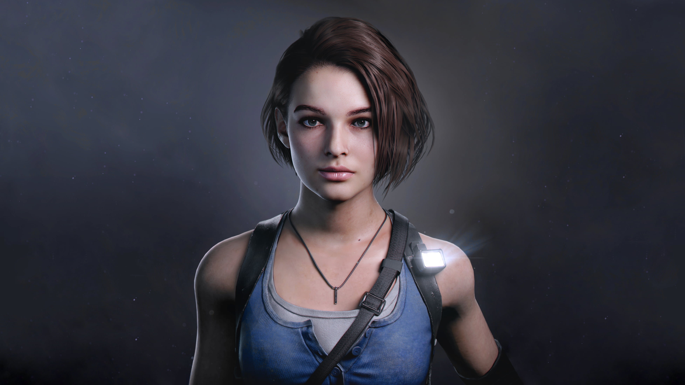
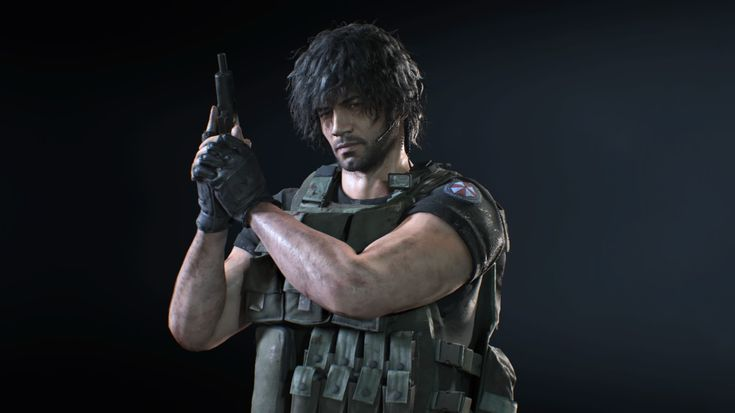
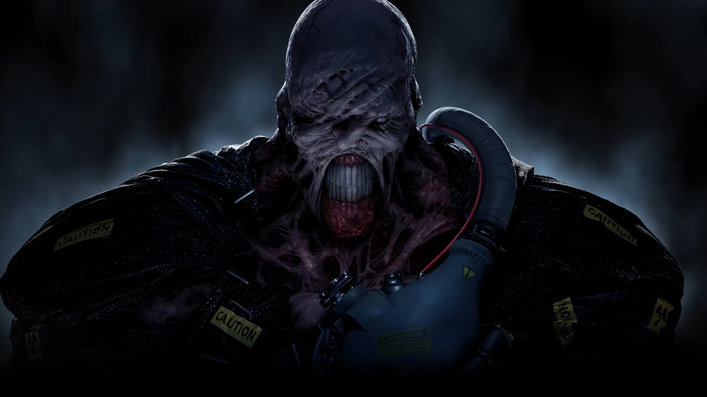
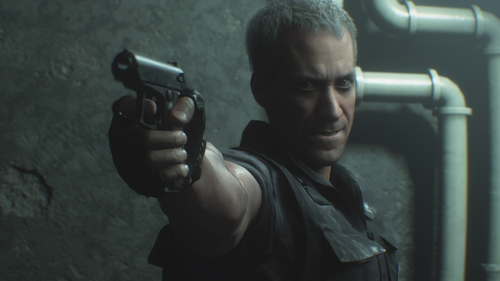
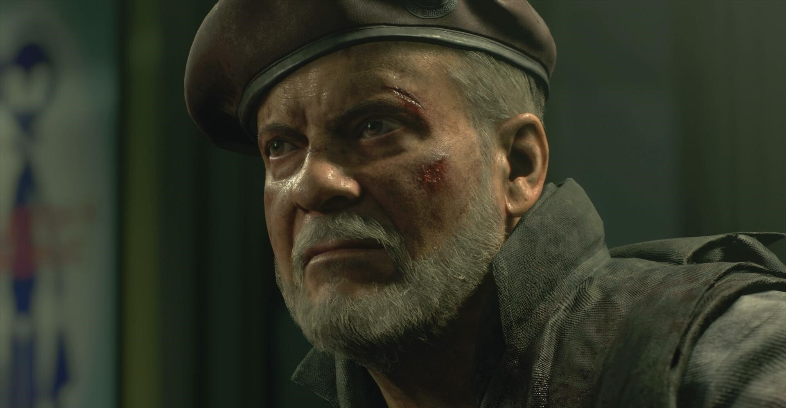
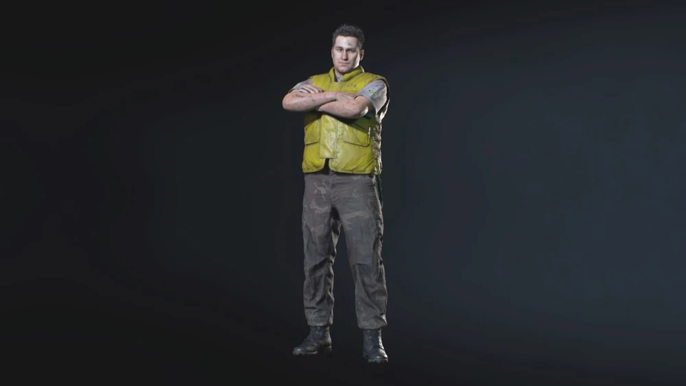
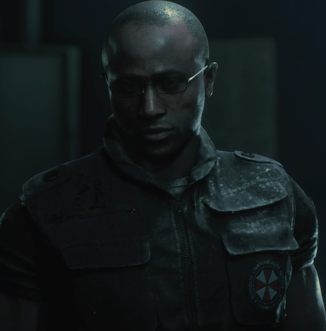

Jill Valentine
S.T.A.R.S. veteran racing through Raccoon City under outbreak to escape Nemesis and expose Umbrella’s involvement

Carlos Oliveira
U.B.C.S. operative initially focused on evacuation, becomes Jill’s ally in combat and survival

Nemesis-T Type
Bioweapon relentlessly hunting S.T.A.R.S. members, morphing and adapting during pursuit

Nicholai Ginovaef
Cunning ex-Spetsnaz mercenary, self-serving and deceitful, manipulates both sides in the chaos

Mikhail Victor
Injured U.B.C.S. commander providing medical aid and strategic support to survivors

Brad Vickers
A S.T.A.R.S. pilot who helps Jill escape during the outbreak but is bitten and later turns into a zombie

Tyrell Patrick
A skilled hacker with the U.B.C.S. who supports Carlos remotely and sacrifices himself to help complete their mission